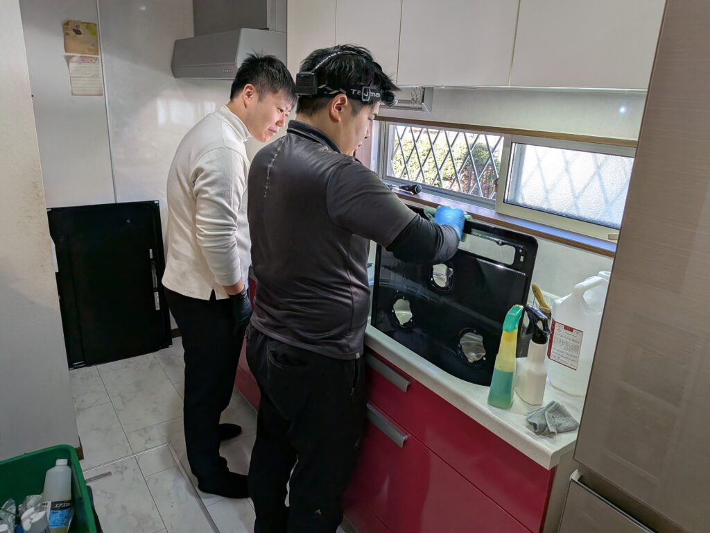
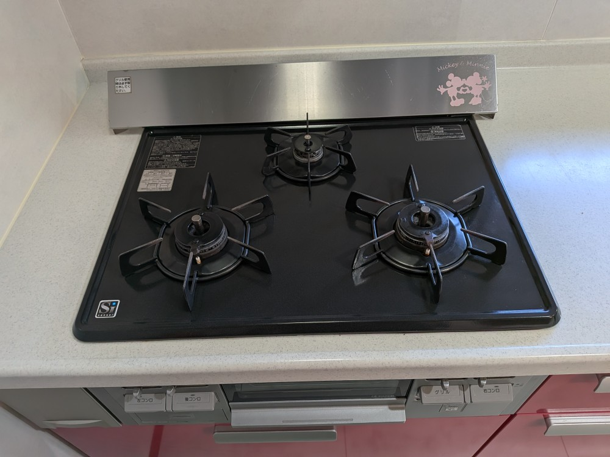
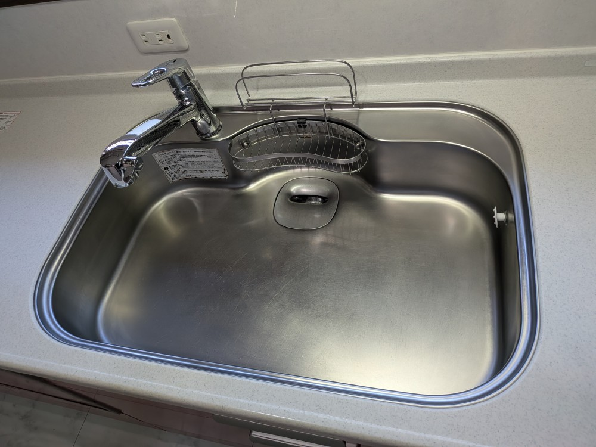
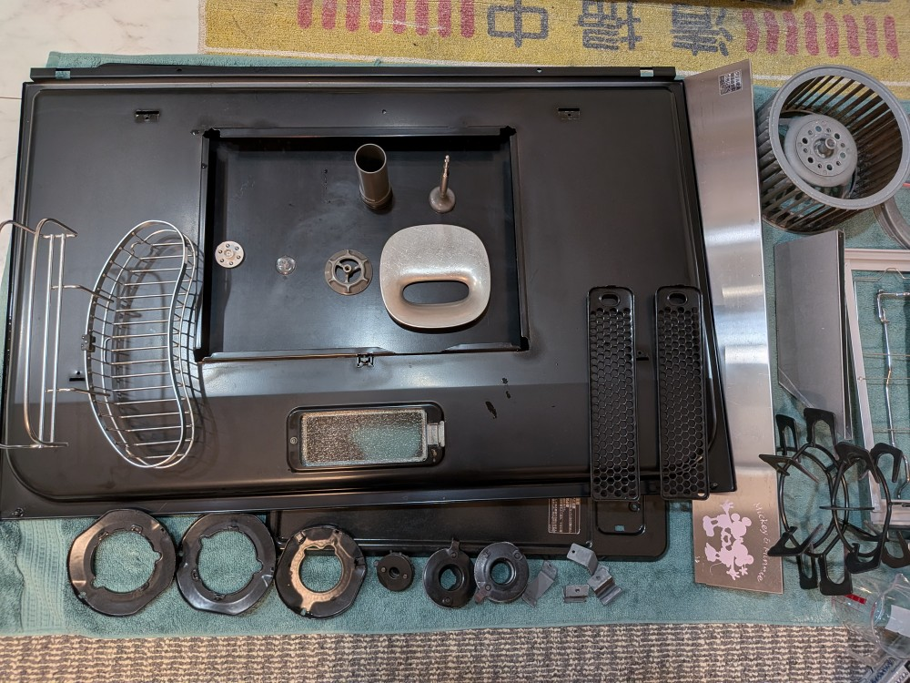
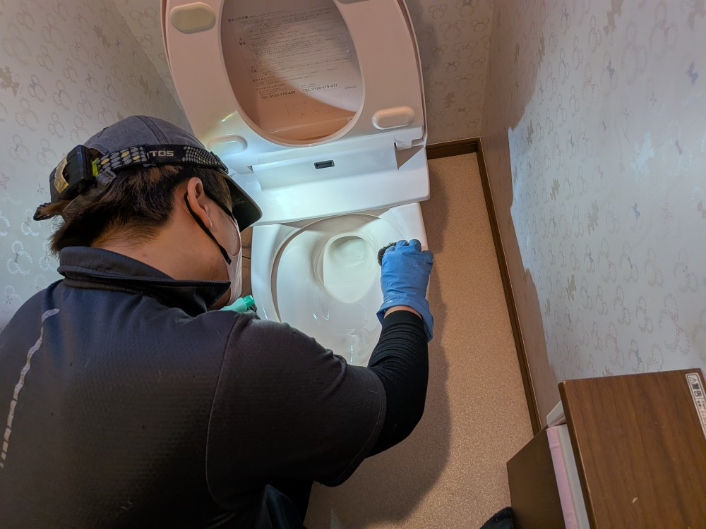
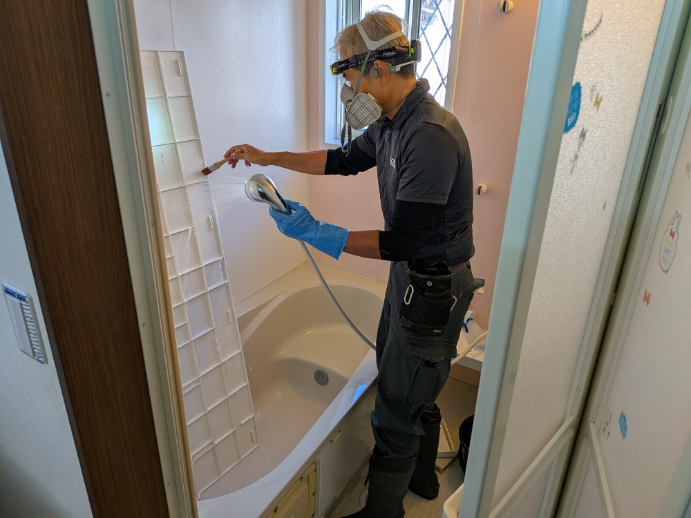
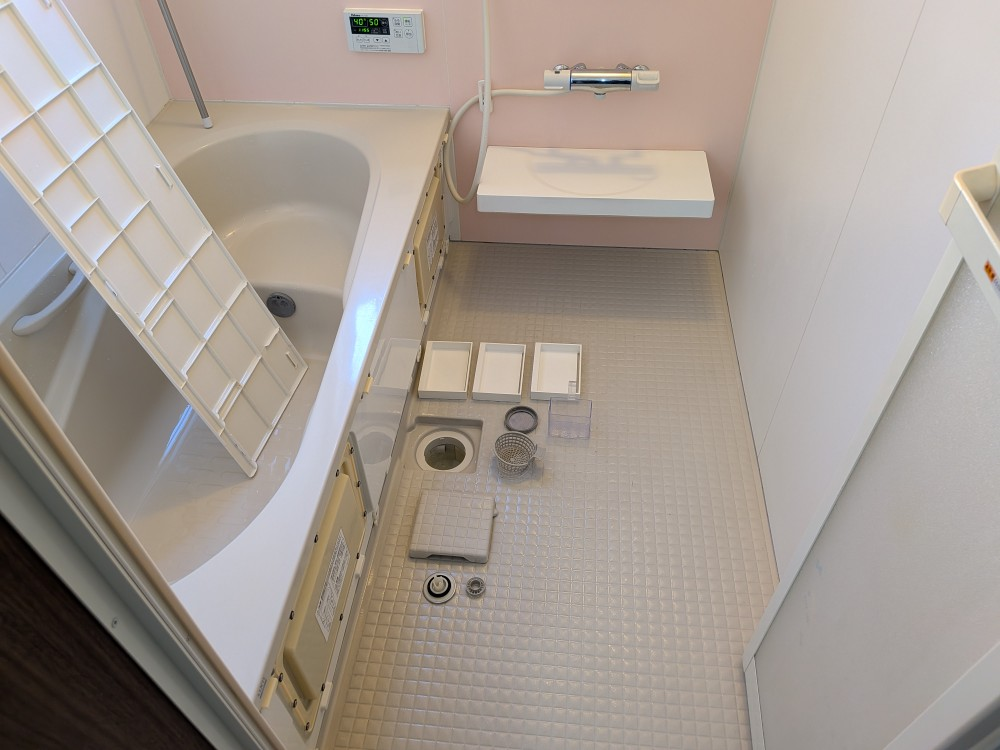
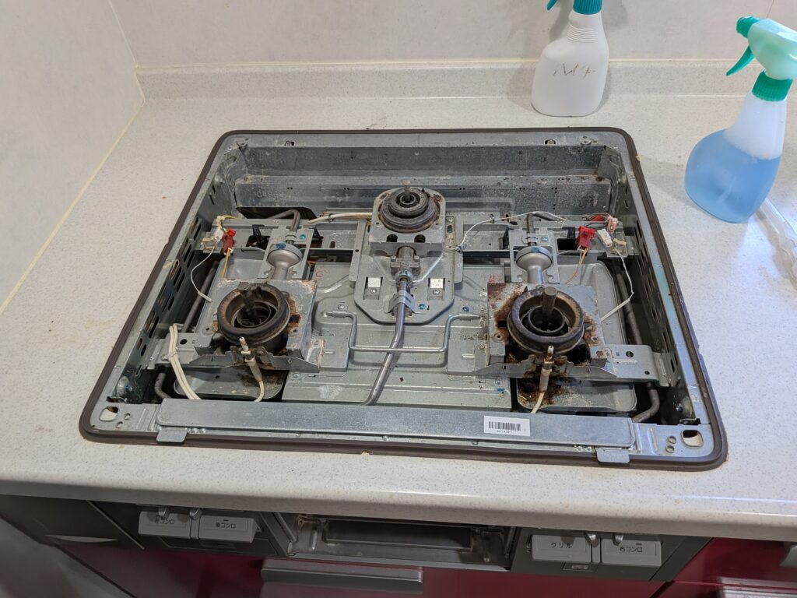

千葉県流山市の毎回リピーター様iさんご自宅戸建ての年末スペシャル水周りプレミアムクリーニングをしました！

千葉県流山市の毎回リピーター様iさんご自宅戸建ての年末スペシャル水周りプレミアムクリーニングを実施しました！ ｉ様ご自宅は、音楽ファミリー様で、クリーニング中にバイオリンの音色やピアノのとても素晴らしい音色が聴こえます!!様は家事含めとてもお忙しい中、水周りの清掃クリーニングを定期的に私どもDAIZENプロフェッショナル軍団にお任せして頂いております、【子育てと仕事でお掃除までは手が回らない】という多くのお客様のニーズにお応えして、『唯一無二の完全分解洗浄』『育児と仕事で待った無し』のお客様を完全バックアップしてクリーニングさせて頂いております！もう何回もスペシャルクリーニングを実施させて頂いている、i様ご自宅はみるみるDAIZENプロフェッショナル軍団によって綺麗に復活しました！






